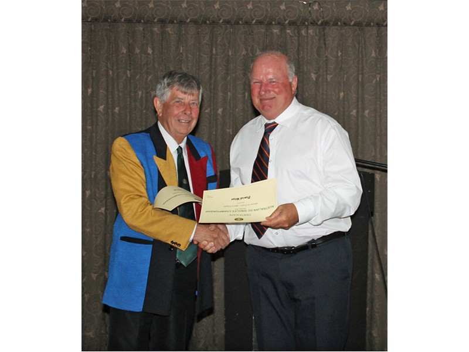

Photos: GC Nationals 2014 - Presentations
To pause Slideshow: move mouse onto picture
(Except where otherwise mentioned, all presentations were made by Neil White (President ACA and Tournament Manager)
- By Eileen Ferguson (VP Croquet SA)
- Graham Keating (Tas), Geoff Jamieson (Qld), Kim Reynolds (WA) and Ron McBride (SA)
- Peter Freer (NSW)
- John van der Touw (Vic)
- Ned Wilson (SA) - received by Stewart Kingsborough
- David Wise (SA)
- Martin Clarke (WA)
- John Levick (NSW)
- John Van Der Touw (Vic)
- Kim Reynolds (WA)
 Chris Mcwhirter (WA)
Chris Mcwhirter (WA)- Susan Anderson (WA)
- Bernie Pfitzner (SA)
- Judy Wembridge (Vic)
- Alison Sharpe (NSW)
- Meredith Morgan (SA) (Prize received by Barry Haydon)
- Wendy Dickson (Vic)
- Anne Quinn (Vic)
- Chris Mcwhirter (WA) and Anne Quinn (Vic)
- Presented by Peter Landrebe (Member WCF Management Committee) to Chris Mcwhirter (WA) and Anne Quinn (Vic)
- Tasmania received by Patsy Paine
 New South Wales
New South Wales- Victoria
- By Neil White (President Croquet Australia)
More photos from the GC Nationals 2014:
The Gold Medal,
Women's Singles,
Men's Singles,
WCF Interstate Shield,
Social Events and
Presentations